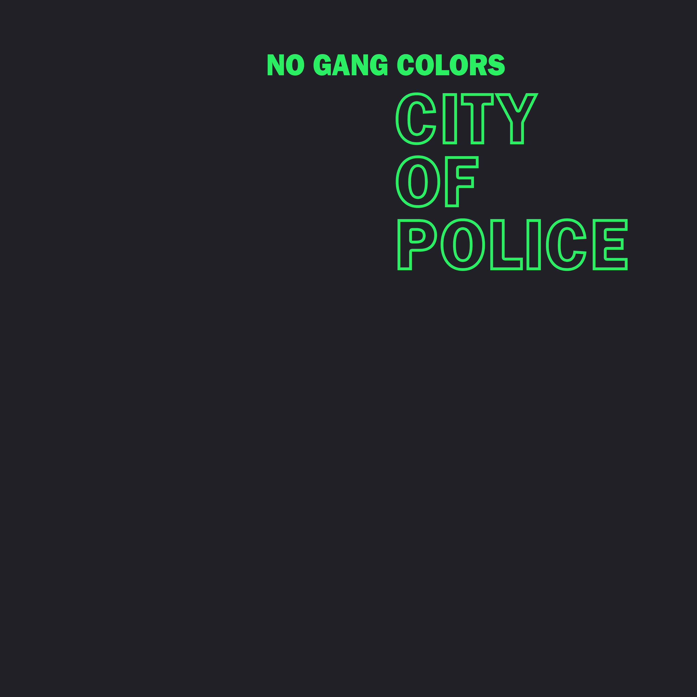

CITY OF POLICE
(2020) Download: MP3

Ma$e & The Hitmen Take What's Yours
Methods of Mayhem Ozzfest 2000
Hybrid Theory 1999 EPK
Derrick May Kraftwerk: Pop Art
Cappadonna, Killa Bamz & Goldfinghaz The Pillage
YG & Nipsey Hussle FDT (Fuck Donald Trump)
Kim Gordon Amoeba: What's in My Bag?
Theo Parrish Red Bull Music Academy
Insane Clown Posse Woodstock 1999
D.J. Sound & Tha Frayser Click Killaz Outta Frayser
XXXTENTACION Staring at the Sky
Eddie Trunk On Tool
Ca$h Money Click & DJ Irv Get tha Fortune (Remix)
Man Is the Bastard [unreleased documentary excerpt]
P. Diddy, Ghostface Killah & EZ Elpee Special Delivery Remix
Group Home & DJ Premier Baby Pa